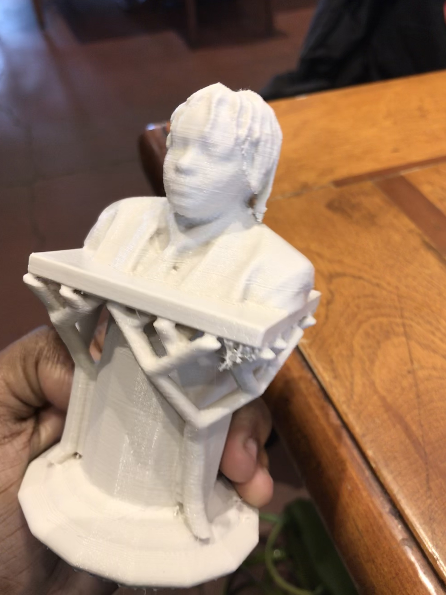
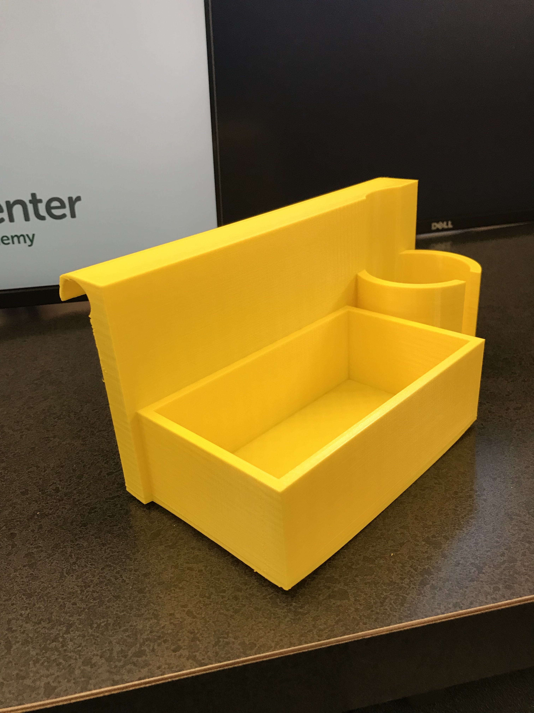
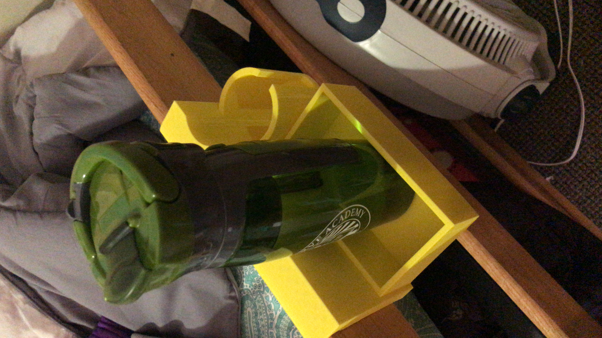

For Unit 5, the class was introduced to 3D printing and Scanning.
The class was tasked with scanning ourselves and adding the resulting mesh to another figure in Meshmixer.
We were able to put our heads on top of whatever we chose.
I decided to put my head on a pedastool.
Next, we had to come up with a small item that could not be made subtractively, and finaly we were given the task of
making an item that could be of some sort of use. we could do this with a partner if we so desired.
This the item I made in Meshmixer. As you can see, I put the scan of my head on top of a pedastool.



This is a holder my partner and I made for our beds in the dorm. I can hold phones, snacks, pencils, etc. The cup holder turned
out to be a little small so I use it to hold my phone by sliding my popsocket through the space in the holder.